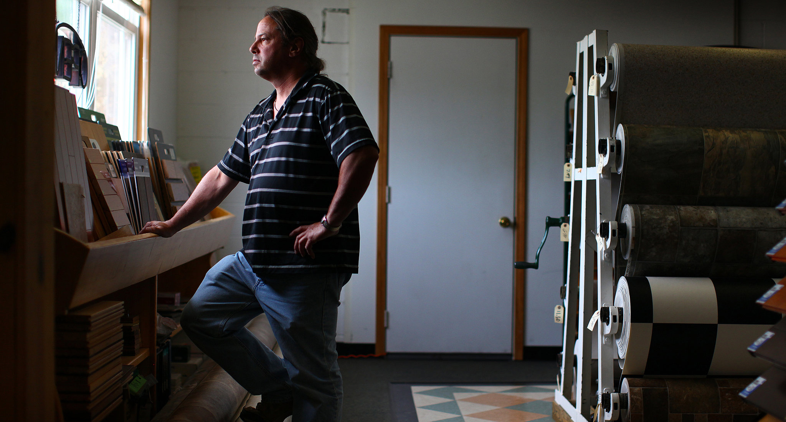

Menu
Sections
All
Arts
Opinion
News
Living
Light Switch
Darkroom
Why Americans See Israel the Way They Do
By ROGER COHEN
The Israeli saga echoes in American mythology. But views are different in Europe, where anti-Semitism is rising.

New Questions on Health Law as Rulings on Subsidies Differ
By ROBERT PEAR
The federal government should follow the growing movement in the states and repeal the ban on marijuana for both medical and recreational use.
On Centenary of World War I, Europe Sees Modern Parallels
By ALAN COWELL
With ceremonies in Britain, Belgium and elsewhere, monarchs, prime ministers and citizens recall the war to end all wars.
Spider-Man Unmasked! Elmo and Minnie, Too
By KIRK SEMPLE
Posing as superheroes and cartoon characters, street performers in Times Square - many of them immigrants - try to eke out a living from tips.